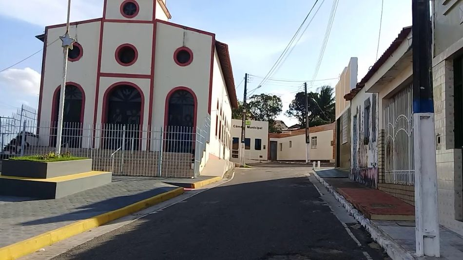

Malhada dos Bois
História
Retroagindo no tempo verifica-se que o outrora Povoado Malhada dos Bois, situava-se em terras pertencentes a Cristóvão de Barros, doadas ao seu filho Antônio Cardoso de Barros, que por sua morte a viúva fez doação das mesmas ao seu genro Pedro Abreu Lima, passando a constitui-se o território da Freguesia de Santo Antônio do Urubu de Baixo, hoje Propriá.
Com o desmembramento havido no território da Freguesia de Santo Antônio do urubu de baixo, para criação da Freguesia de Aquidabã, ditada pela Resolução Provincial nº 930 de 11 de abril de 1872, o povoado Malhada dos Bois passou a fazer parte dessa nova freguesia.
Com a criação do Município de Aquidabã, o povoado de Malhada dos Bois passou a fazer parte desse município, até que em 1926, com o desmembramento da parte do território de Aquidabã, para criação do Município de Muribeca, através da Lei Estadual nº 942 daquele ano, o povoado Malhada dos Bois passou a integrar o Município de Muribeca.
Com a Lei Estadual nº 525-A de 25 de novembro de 1953 foi criado o Município de Malhada dos Bois, tendo como sede municipal o povoado da mesma denominação, que somente foi instalado em 31 de janeiro de 1955.
fonte: hhttps://cidades.ibge.gov.br/brasil/se/malhada-dos-bois/historicoDados Gerais de acordo com o IBGE
| Prefeito (a) | Augusto Cesar Aguiar Dinizio |
| Vice-Prefeito (a) | Deogenes Fraga Cardoso |
| Site do município | https://malhadadosbois.se.gov.br/ |
| Área territorial | 62.372 km² |
| População estimada | 3.715 pessoas |
| Densidade demográfica | 54,68 hab/km² |
| IDHM | 0,599 |
| PIB per capita | R$ 11.742,37 |